MAXimal
добавлено: 11 Jun 2008 10:11
редактировано: 10 Nov 2011 20:42
Содержание [скрыть]
Знаковая площадь треугольника и предикат "По часовой стрелке"
Определение
Пусть даны три точки  , 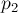, 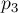. Найдём значение знаковой площади
, 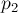, 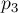. Найдём значение знаковой площади  треугольника 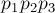, т.е. площади этого треугольника, взятой со знаком плюс или минус в зависимости от типа поворота, образуемого точками , , : против часовой стрелки или по ней соответственно.
треугольника 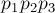, т.е. площади этого треугольника, взятой со знаком плюс или минус в зависимости от типа поворота, образуемого точками , , : против часовой стрелки или по ней соответственно.
Понятно, что, если мы научимся вычислять такую знаковую ("ориентированную") площадь, то сможем и находить обычную площадь любого треугольника, а также сможем проверять, по часовой стрелке или против направлена какая-либо тройка точек.
Вычисление
Воспользуемся понятием косого (псевдоскалярного) произведения векторов. Оно как раз равно удвоенной знаковой площади треугольника:
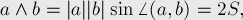
где угол 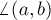 берётся ориентированным, т.е. это угол вращения между этими векторами против часовой стрелки.
(Модуль косого произведения двух векторов равен модулю векторного произведения их.)
Косое произведение вычисляется как величина определителя, составленного из координат точек:
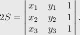
Раскрывая определитель, можно получить такую формулу:
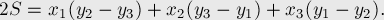
Можно сгруппировать третье слагаемое с первыми двумя, избавившись от одного умножения:
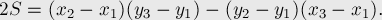
Последнюю формулу удобно записывать и запоминать в матричном виде, как следующий определитель:
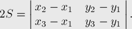
Реализация
Функция, вычисляющая удвоенную знаковую площадь треугольника:
int triangle_area_2 (int x1, int y1, int x2, int y2, int x3, int y3) { return (x2 - x1) * (y3 - y1) - (y2 - y1) * (x3 - x1); }
Функция, возвращающая обычную площадь треугольника:
double triangle_area (int x1, int y1, int x2, int y2, int x3, int y3) { return abs (triangle_area_2 (x1, y1, x2, y2, x3, y3)) / 2.0; }
Функция, проверяющая, образует ли указанная тройка точек поворот по часовой стрелке:
bool clockwise (int x1, int y1, int x2, int y2, int x3, int y3) { return triangle_area_2 (x1, y1, x2, y2, x3, y3) < 0; }
Функция, проверяющая, образует ли указанная тройка точек поворот против часовой стрелки:
bool counter_clockwise (int x1, int y1, int x2, int y2, int x3, int y3) { return triangle_area_2 (x1, y1, x2, y2, x3, y3) > 0; }